Chapter 4: After Game Boy (1989–1996)
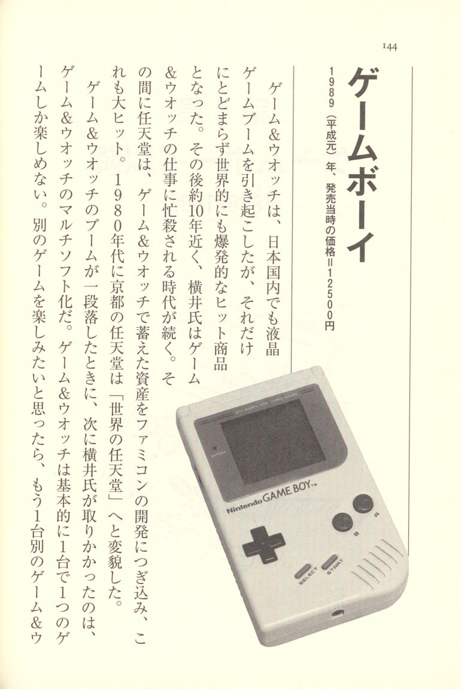
Game Boy Game Boy
1989 (Heisei 1) — Launch price: ¥12,500
Game & Watch sparked a liquid crystal game boom within Japan, but it didn't stop there — it became an explosive hit worldwide as well. For nearly ten years afterward, Yokoi was consumed by Game & Watch-related work. During that time, Nintendo poured the assets it had accumulated through Game & Watch into the development of the Famicom, which also became a massive hit. In the 1980s, Nintendo in Kyoto transformed into "Nintendo of the World."
When the Game & Watch boom began to settle down, what Yokoi turned his attention to next was making Game & Watch into a multi-software platform. Game & Watch was fundamentally a system where each unit could only play one game. If you wanted to enjoy a different game, you needed another Game & Watch unit. Naturally, the idea of a multi-software platform — where you only need one console and can play all sorts of games just by swapping out cartridges — was something users had been strongly requesting.
However, turning this idea into an actual product meant facing one daunting obstacle after another. The first issue was cost. By that time, Nintendo had already released the Famicom, and it was enjoying tremendous popularity. But when you looked at the multi-software version of Game & Watch from a design standpoint, its internals were almost identical to the Famicom. In fact, it was even worse than that — it also required a liquid crystal monitor that the Famicom didn't have. In terms of cost, it was inevitably going to be more expensive to produce than the Famicom. But the public's perception was different. People would react by asking, "Why is a game machine small enough to fit in your pocket being sold at a higher price than the Famicom?" The overriding objective in developing the multi-software version of Game & Watch — bringing it to market at a lower price than the Famicom — became the biggest challenge of all.
No matter how you crunch the numbers, the price just doesn't work out
The development of the Game Boy began after Game & Watch had reached a certain stage. The idea was that we absolutely had to make it multi-software compatible — meaning you could swap out the software — so I assigned two of my subordinates to the task. That was how it all started. The concept was already decided in my mind: monochrome, and multi-software. However, the problem was that unless we priced it below the Famicom, nobody would accept it.
But achieving that price point with a built-in display was simply impossible. So the screen would be monochrome — that was fine. Every feature that could be cut would be cut. But no matter how much we trimmed, the numbers just wouldn't work out.
While we were wrestling with this problem, we stumbled upon something interesting. When we took apart a certain LCD television, we found it used a technology called chip-on-glass. It's a technique where the circuitry is printed directly onto the liquid crystal panel. With this, we could bring costs down considerably. It finally looked like we could reach the price point we'd been aiming for.
The problem, however, was that because of our existing relationship through Game & Watch, we had been relying on Sharp for the liquid crystals — and no matter what, the price just wouldn't work out with them. Meanwhile, Citizen, which had been looking to break into the LCD market as a new entrant, came forward with an aggressively low price. The Game Boy, which we'd been struggling with for over a year through trial and error, suddenly became a realistic possibility. We thought, at that price, we can do this. So when it came down to whether we should go ahead and switch to Citizen, or try to negotiate the price with Sharp, Sharp suddenly dropped their price. And so we reached an agreement, and the Game Boy came together.
The cost wasn't quite ideal, but they had somehow managed to bring the multi-software version of Game & Watch — the "Game Boy" — to market. However, it was here that Yokoi made a critical mistake. "That was the biggest failure of my life. For a time, I seriously considered killing myself," he said — words that seemed utterly out of character for the normally sociable Yokoi.
The thing about liquid crystal displays is that they don't look clear from every angle. Each LCD has a particular angle from which it's easiest to view. Word processors and laptop computers use
LCD screens that are in common use — anyone who has used one knows the display can suddenly go dark the moment the viewing angle shifts even slightly.
This characteristic of liquid crystal displays is a critical consideration when designing LCD products. In other words, you have to design the product around an assumption of what posture the user will be in when they use it. In the case of Game & Watch, the user would be sitting, holding it in the palm of their hand, and peering down into it slightly from below. As it happened, the ideal viewing angle of the LCD adopted for Game & Watch was five degrees from below. This turned out to be just right.
However, the Game Boy was considerably larger than Game & Watch. The LCD portion stuck out beyond the palm of the hand. This meant that users would naturally end up looking at the LCD straight on, or even slightly from above. This was the point that the development team, accustomed to Game & Watch, had overlooked. They didn't realize it until after the prototypes were completed, and this is where Yokoi found himself deeply troubled.
A Mere Five-Degree Angle: A Major Blind Spot
Game & Watch used TN liquid crystal1 designed for calculators, and it was made to be easy to see when viewed from five degrees below — just as you would when using a calculator. But when you looked at it straight on, the contrast turned out to be surprisingly poor.
At first, we used the same liquid crystal to build the Game Boy as well. The problem was that with the Game Boy, in order to prevent reflections from indoor lighting and sunlight, you inevitably ended up viewing it from slightly above. We hadn't noticed this. Even when I went to Sharp to look at the prototype they'd completed, I unconsciously viewed it from five degrees below and said, "Ah, this looks good. It turned out great," and went home.
The thing is, Nintendo had been a tiny company, but with Game & Watch and the Famicom and so on, the way people around us regarded us had changed. I came to understand only later just how much weight it carried when a division head at Nintendo said "OK." The moment I said "OK," Sharp went ahead and spent four billion yen to start building a dedicated factory.
So one day, the president looked at the prototype and said, "What the hell is this? You can't see a damn thing." And indeed, when you looked at it straight on, the screen really was hard to see. The president said, "What are we gonna do about this? You can't sell something you can't see. Forget it — we're not selling this." I was absolutely stunned.
If I Hadn't Been Saved by Cold Tofu, I Would Have Killed Myself
At that point, I was in terrible trouble. To me, partner companies were partner companies — not "subcontractors." I always felt that things got made thanks to our partner companies, and that we must never cause them trouble. That was the awareness I carried at all times. And precisely because of that, the people at our partner companies trusted me, I believe.
But now, a factory that had cost four billion yen might end up going to waste. When I thought about how the trust I had built up ever since joining Nintendo might be reduced to zero, I fell into despair. I was backed into an utterly hopeless corner.
Now, there was something called STN liquid crystal2, which had good contrast. At that point, "this is terribly slow, and you can't see any movement in a game. It's a complete waste of time," they told me. But I said, "Even if it's no good, there's no other option, so please just try it once," and asked Sharp to do it.
For the next half month, I couldn't get food down my throat. My brother-in-law is a doctor, and when he ran a blood test on me, it turned out I was malnourished. He was shocked — "Maybe during wartime, but I've never heard of this happening nowadays." I even considered suicide. I simply couldn't swallow anything. Then the Chinese restaurant I frequented got worried about me and said, "Maybe you could eat this," and brought out some cold tofu. Cold tofu isn't something you'd find at a Chinese restaurant, but it was incredibly delicious. Somehow it made me feel enormously relieved, and after that I was finally able to eat again. You could say I was saved by tofu.
Some time later, a salesman from Sharp called me. "I went to the factory the other day, and the image is clearly visible," he said — with STN liquid crystal. I immediately called the technical department, and they said, "Well, we did get it to work, but it happened by accident, and we haven't collected any data." The salesman had probably seen it in the middle of an experiment.
After that, it was a week of hope and anxiety. Please, somehow, let it display properly. And in the end, they did manage to collect the data. The issue was speed versus contrast — if you prioritized speed, contrast would drop, but it didn't really affect the human eye that much. When they measured it, the actual contrast values had indeed fallen, but the human eye is a forgiving thing, and it wasn't particularly noticeable. They obtained data showing just the right balance between contrast and speed.
So I flew to the president's office with a prototype. I boldly presented it to him, and he just glanced at it sideways and said, "Ah, this'll do, won't it?" — and that was it. (laughs) I was completely deflated. From the president's perspective, it apparently hadn't seemed like such a big problem.
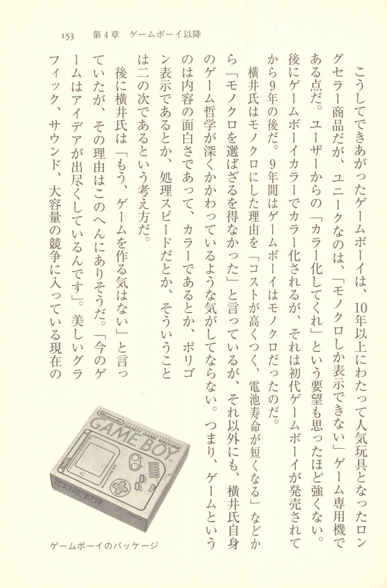
Yokoi explained that the reason for choosing monochrome was that "the cost would be too high and battery life would be shorter," saying he "had no choice but to go with monochrome." But beyond those reasons, I can't help feeling that Yokoi's own game philosophy was deeply at work. In other words, it was the belief that what matters in a game is the quality of its content — whether it's in color, whether it uses polygon graphics, how fast the processing speed is — all of that is secondary.
Later, Yokoi said, "I don't feel like making games anymore." The reason likely lies in this very philosophy. "Games today have exhausted all their ideas." Beautiful graphics, sound, the race for ever-greater capacity — in today's gaming landscape, all of it is something Yokoi regards with a cool, detached eye.
The Reason for Insisting on Monochrome
Around the time the Game Boy was being made, the Famicom was at the height of its popularity, so I was constantly asked, "Why monochrome?" My thinking was that it would be a multi-software version of Game & Watch, so I centered everything around the concept of "portability."
If it was a game machine you carry around and play with, then naturally it had to run on dry batteries. And if it couldn't last ten or twenty hours, it would be useless as a game machine. At the time, there were color LCD televisions available, but their battery life was only about an hour and a half. On top of that, backlit LCDs are invisible in bright outdoor light. So monochrome was the only option.
A long time ago, someone brought a portable LCD television to the president, and the president gave it to me. I was delighted and started using it, but after one hour it went dead. I wondered what had happened, and it turned out the batteries had died. I thought, this thing has problems even as a television. That was very much on my mind.
Surprisingly, even the engineers would say, "Why don't we make it color?" When I told them, "If we make it color, the batteries won't last," they'd say, "Why not just use an AC adapter?" But if you're going to use an AC adapter and play Game Boy in your room, then compared to the Famicom the screen is smaller, harder to see — there's nothing but disadvantages. So I kept insisting, until I was blue in the face, that it had to occupy a different space from the Famicom. I got the president's approval for monochrome by explaining that "the batteries will die quickly, it'll be hard to see in bright places, and the price will go up."
With that settled, I figured some competitor was absolutely going to copy this product, and if they copied it, they'd probably make it color. So I sat back and waited, and sure enough, it came. When I heard, "A copycat product has come out — it's color, and it's incredibly popular," I was overjoyed. "Great! Great!" I said, delighted. That was Sega's "Game Gear3."
Around that time, a funny manga came out comparing Game Gear and Game Boy.
At first, Game Gear is shouting, "I can rotate, enlarge, and shrink freely! I'm color!" while Game Boy hangs its head dejectedly. But then suddenly Game Gear is the one hanging its head. Game Boy asks, "What's wrong?" — dead batteries (laughs). This manga perfectly captured exactly what I was aiming for. I was so happy I made a copy and kept it pinned next to my desk for a while.
Even a Black Snowman Looks White
The fundamentals of gaming are things like Go and shogi — even if you add color to them, it doesn't really matter much. In the end, color was just about flashy first impressions and nothing more. At the time, the disadvantages of making it color far outweighed the benefits.
The same thing apparently happened when Sony released the transistor radio. At first, there were many complaints that "it has too much noise." But when they actually put it on the market, it sold incredibly well. Why? Because the batteries lasted a long time. There was no way it could beat a vacuum tube radio on sound quality. But overall, the transistor radio was superior.
For entertainment products, the initial impression is crucial — that's what determines how well they sell. Toys are meant to sell with a flashy "wow" factor, and after two or three hours of play, people get bored. That's the natural life of a toy. But with Game Boy, you keep swapping out software and coming back to it, so practical strengths are what really matter.
I always say, "Try drawing a snowman in monochrome." Even drawn in black, a snowman looks white. An apple looks properly red even in monochrome. Old movies — you often don't even remember whether they were in color or black and white, do you? Human beings perceive color conceptually. Highway tunnels, for instance, are lit with monochromatic light. But even under that light, if you're holding an apple, it looks properly red. Yet if you film it on video, it turns out to be bluish.
So when TV games started chasing tens of thousands of colors and things like that, I felt that this was moving in a completely different direction from what games are really about.
Can't We Get Back to the Essence of Games?
In the world of the Famicom, Game & Watch, and Game Boy, there was an attitude of trying your hardest to come up with new games. If the other side came up with Go, our side would counter with shogi — that kind of spirit.
But once things had progressed to a certain point, there was nothing left to do — and so the thinking in TV games became: "If we add color, won't that create a sense of novelty?" But from the perspective of the people making games, this was really a cop-out. Instead of wringing out new ideas, they were drifting toward the easy route. Gradually, flashiness was piled on, and speed increased too. CPUs went from 8 to 16, 32, 64 bits.
But this kind of thing is bound to hit a ceiling eventually. Speed is a matter of relativity — even if everything moves slowly, as long as the things you're controlling also move slowly, you can still create difficulty.
Ultimately, the essence of games is ideas. Saying "we can't come up with ideas" is simply a shortage of ideas. And yet, in TV games, that shortage of ideas there was an escape route. That was the CPU race, the color race.
Once that happens, it won't be a company like Nintendo — one that creates the essence of games — that rises to the top, but rather companies skilled at creating visuals and CG. Nintendo's position will be lost. So, wanting to create something that returned once more to the essence of games, we created the Virtual Boy.
Game Boy Software
1989 (Heisei 1) onward
The Game Boy is essentially a multi-software version of the Game & Watch. Naturally, just as he had done with the Game & Watch, once development of the Game Boy hardware was complete, Yokoi threw himself into developing Game Boy software. In the case of the Game Boy, software was not produced by Nintendo alone — third parties also participated. Even so, the company that released the most Game Boy software was Nintendo, and Yokoi was involved in nearly all of it in one form or another.
However, it became clear that the Game & Watch and the Game Boy were completely different in the nature of their games. With the Game & Watch, everything on the screen was pre-burned in advance. For example, to create the movement of a character moving from left to right, several character images were placed on the LCD screen beforehand, and then lit up in sequence from left to right to create the illusion of movement.
That is to say, all on-screen images were displayed in this way. However, with the Game Boy, just as with modern personal computers, you can freely display anything you like on the screen. If you want to move a character, you simply display the character's image and shift it one dot at a time. With the Game & Watch, characters moved in a discontinuous fashion — piko, piko, piko — whereas with the Game Boy, they glide smoothly and continuously.
This point goes beyond a mere difference in hardware — it profoundly affects the fun of the games themselves. Yokoi says, "Game & Watch is a game about the fun of reading the timing."
If you want to experience this difference firsthand, I would encourage you to play "Game Boy Gallery," a Game Boy software title released by Nintendo. All the games included in it are recreations of Game & Watch titles, and you can enjoy two versions of each: the original version faithful to the Game & Watch, and a renewed version remade for the Game Boy. If you compare the two, the difference between Game & Watch and Game Boy should become very clear. Of course, you'd have to hunt one down on the used software market and have a Game Boy on hand, so I realize it's no simple matter.
One more thing worth noting here is that ideas now taken for granted in the gaming world were born from the Game Boy. For example, the competitive puzzle game and the chain mechanic in falling-block games — these are ideas that originated with the Game Boy. "Tetris," the progenitor of the falling-block puzzle genre, was not a game devised by Yokoi. However, it is no exaggeration to say that the current popularity of falling-block games owes itself to the various ideas — versus play, chains, and more — that were added on from there. When recounting the history of falling-block games, Yokoi's contributions cannot be left out.
Game & Watch and Game Boy Are Completely Different
Game & Watch software and Game Boy software inhabit completely different worlds. With Game & Watch, you move things one frame at a time in a digital fashion — it's a game about reading the timing. The Game Boy, on the other hand, is a game of continuous motion.
So when porting a Game & Watch title like "Manhole" to the Game Boy, making it move smoothly and fluidly would be completely pointless. So instead, we made it jump. That way, the fun of Game & Watch — reading the timing — stays alive. I didn't even realize this myself until I actually tried porting it.
I was involved in almost all of the Game Boy's software. To varying degrees, I either came up with the concept myself or, even when it was someone else's idea, I was deeply involved in giving direction and making suggestions. Pocket Monsters is about the only title I wasn't involved with.
Versus Tetris — The Program Took One Week
The Game Boy's first software titles were "Tennis," "Block Breaker," and "Mario Land" — those three. For starters, I felt that the Mario character would be the most easily accepted as the first game, and I was confident that anyone could enjoy a side-scrolling game. Among the early titles, the one that really carried the Game Boy forward was "Tetris."
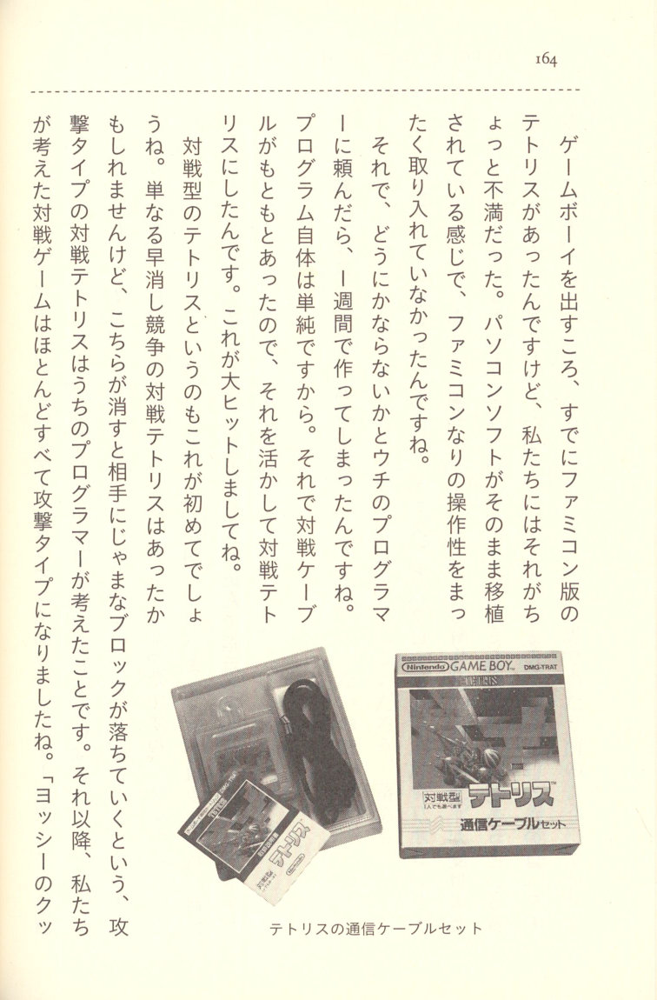
Tetris communication cable set By the time we were launching the Game Boy, the Famicom version of Tetris already existed, but we were a little dissatisfied with it. It felt like the PC software had just been ported over as-is, without incorporating any of the controls and playability suited to the Famicom.So I asked one of our programmers if he could do something about it, and he built it in just one week. The program itself is simple, after all. And since we already had the link cable, we put it to use and made it into versus Tetris. This became a massive hit.
I believe this was the first versus-style Tetris. There may have been versus Tetris where you simply raced to clear lines, but the attack-type versus Tetris — where clearing lines on your side sends junk blocks falling on your opponent — that was something our programmer came up with. From that point on, nearly every competitive game we designed became an attack type. "Yoshi's Cook- ing," "Yoshi's Egg," "Panel de Pon" — they're all like that.
Born from the President's New Year's Address: "Dr. Mario"
At Nintendo, every year at the start of work in January, there's a New Year's ceremony lasting about an hour, where the president gives an address. Right at the start of the new year, the president always talks about gloomy things (laughs). No matter how well the company is doing, his speech is always stern. And in it, he says things like, "What matters in games is the software. No matter what sells, it's the software that drives it." Now, as the person who created the Game Boy hardware, that kind of stung. So I secretly took the president's words as a challenge and thought, "Oh, so it's software that matters, is it? Fine then, I'll show him." And what came out of that was "Dr. Mario."
If Tetris was about matching shapes, then the idea of matching colors instead is something anyone could come up with. While experimenting with various approaches, the idea of making pieces disappear when you matched four colors came up, but that was too difficult and didn't work as a game. Two colors, though — that would work. And then, since it was two colors, when you looked at it, the pieces started to look like medicine capsules, and
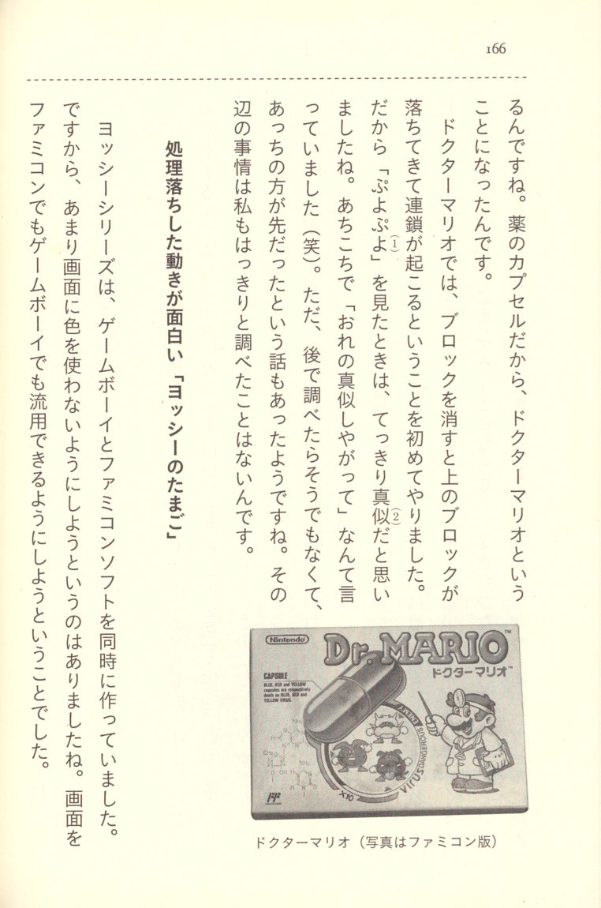
Dr. Mario box art (Famicom) that's how it became Dr. Mario. And since they looked like medicine capsules, the game became "Dr. Mario."In Dr. Mario, for the first time I implemented the mechanic where clearing blocks causes the blocks above to fall down, triggering chain reactions. So when I saw "Puyo Puyo4," I was sure it was a copy5. I went around saying things like, "They ripped me off!" (laughs). But when I looked into it later, it turned out that wasn't really the case — apparently their version may have actually come first. I've never really investigated the details thoroughly myself.
The Fun of Slowdown-Induced Movement: "Yoshi's Egg"
The Yoshi series was developed simultaneously as Game Boy and Famicom software. Because of that, we made a point of not using too much color on screen. The idea was to make the screens reusable on both Famicom and Game Boy.
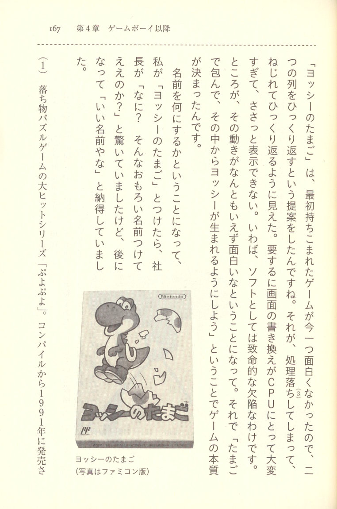
Yoshi's Egg box art (Famicom) The game that was originally brought to me for "Yoshi's Egg" wasn't very interesting, so I proposed that we flip the two columns upside down. But that caused processing slowdown6, and the flipping motion appeared to twist as it turned over. Basically, the screen redraw was too much for the CPU to handle — it couldn't display it quickly enough. In other words, it was a fatal flaw from a software standpoint. But as it turned out, that movement was somehow inexplicably fun. So we decided, "Let's wrap them in eggs, and have Yoshi be born from inside," and that's how the core of the game was established.When it came time to decide on a name, I suggested "Yoshi no Tamago" (Yoshi's Egg), and the president was surprised, saying, "What? You're really going with such a funny name?" But later he came around and said, "That's actually a good name," fully convinced.
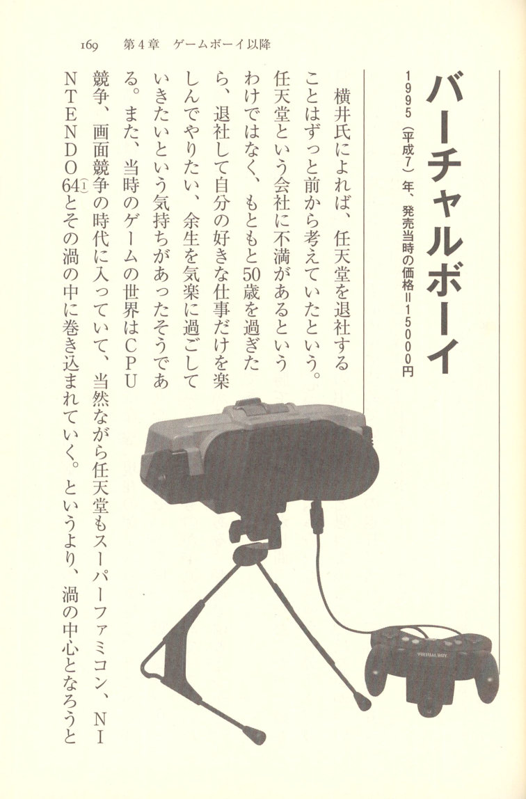
Virtual Boy console Virtual Boy
1995 (Heisei 7) — Release price: ¥15,000
According to Yokoi, he had been thinking about leaving Nintendo for a long time. It wasn't that he had any particular dissatisfaction with Nintendo as a company — he had simply always felt that once he passed fifty, he wanted to leave the company and enjoy doing only the work he truly loved, spending the rest of his life at ease. He said he had felt that way for some time. Meanwhile, the gaming world of that era had entered an age of CPU competition and graphics competition. Naturally, Nintendo too was being drawn into that vortex with the Super Famicom, the NINTENDO 647, and the rivalries surrounding them. Or rather, Nintendo was trying to become the very center of that vortex, and was being swept along in that direction. In response to this trend, Yokoi came to feel that "there was no longer a place for him within Nintendo."
Yokoi was a man of ideas, not a man of competition. The current gaming world is dominated by a type that overwhelms players with high-performance CPUs, large-capacity optical discs and ROM cartridges, enormous scenarios, and stunning graphics. It was, in essence, a war of attrition through sheer volume — and Yokoi was clearly a guerrilla fighter. He was the type who fought by devising tricks and mechanisms that no ordinary person would think of.
The common wisdom is that guerrilla tactics fundamentally cannot win against a war of sheer volume. Still, although Yokoi never said so explicitly, somewhere deep down he seemed to believe: "And yet, sometimes the guerrilla does beat the forces of sheer volume — and that's what makes the world interesting." In any case, Yokoi had made up his mind to leave the company. And the product he developed as a "parting gift, a final act of gratitude" before his departure was the Virtual Boy.
A pitch-black field of vision gives birth to a world of infinite depth
3D, whatever its merits as an information device, is tremendously well suited as entertainment. I have my doubts about stereoscopic television, but for games and movies, it should be an incredibly good fit.
Before the concept for the Virtual Boy took shape, a certain company came to pitch us an LED display. It was a tool used by aircraft maintenance engineers — a diagram would appear in total darkness, and you'd peer into it with one eye. At the same time, you'd use the other eye to look at the actual object. That was how it worked.
At the time, my reaction was just that the diagrams were impressively clear, and I wasn't particularly interested beyond that. But later, it hit me — maybe that pitch-black darkness could actually be turned into something. And that's how the Virtual Boy project got started.
For stereoscopic images, using liquid crystal is the standard approach, and it's the easiest to build. However, liquid crystal uses a backlight, so even when the screen is made completely dark, a few percent of the light still bleeds through. If you try to draw a pitch-black screen with liquid crystal, you end up seeing a faint grey screen. When it's truly pitch black, the human eye perceives infinite depth. But with liquid crystal, once that grey base screen becomes visible, that sensation is lost. That's why we used LED. With LED, you can achieve true infinite depth.
There's another issue as well. When you draw polygons8, the angle of the lines differs subtly between the left and right images. With liquid crystal, the jaggies9 make it so that identical lines don't look the same. That causes eye fatigue. But with LED, lines are drawn smoothly, so stereoscopic vision is far easier to achieve. Since LED dots are round, at the same resolution, LED has a significant advantage over liquid crystal.
In total darkness, you don't feel the border of the screen. That was the key difference from conventional liquid crystal. So I was always telling software developers, "Don't draw a screen border — just draw only the lines you need. If you do that, the game field will feel incredibly vast."
3D Has an Infinite Game Field
Television games have a limited game field. So when you try to diversify the gameplay, there's the concept of scrolling. You can play freely across two screens, three screens. But no matter how far you go, it's still flat. With 3D, however, you can use depth. In other words, an infinite game field becomes possible. That was the spirit behind what we were doing. We had high hopes that new kinds of games would emerge.
Take something like today's Virtua Fighter — that's a 2.5-dimensional game. That and the Virtual Boy are completely different. Even if a character swings a sword around in Virtua Fighter, it's not actually happening in three dimensions — it's being made to look that way within a two-dimensional space. It's still flat, through and through. Virtual Boy, on the other hand, is true three-dimensional.
The First Software Was Pinball
Virtual Boy's first software title was "Galactic Pinball." Pinball never became a massive hit on the Famicom or elsewhere, but it was at least a reliable staple.
At first, we had drawn the pinball table inside the screen, but I said, "This is Virtual Boy — don't do something that stupid. Just draw the frame and make it a pinball game set in space."
Initially, titles like "Mario Clash" were also on the list, but people around me kept saying, "Don't put out something like this." That's where the difference in how people viewed the product came in. As far as I was concerned, if you thought about the target user base, it was a perfect fit as a game. But even within the company, there was a strong perception that Virtual Boy was a product aimed at hardcore enthusiasts.
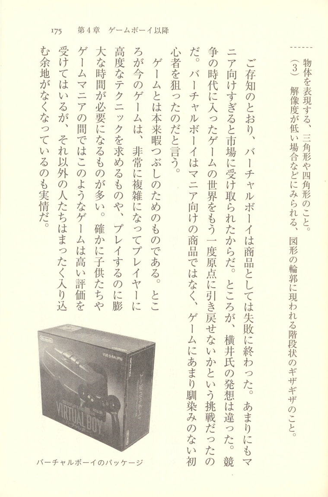
Virtual Boy retail packaging As is well known, Virtual Boy ended in failure as a commercial product. It was perceived by the market as being far too oriented toward hardcore enthusiasts. However, Yokoi's vision was entirely different. It was a challenge to pull the world of gaming — which had entered an era of intense competition — back to its origins once more. He says that Virtual Boy was not a product aimed at enthusiasts, but one that targeted beginners who were not particularly familiar with games.Games are, by nature, a way to kill time. And yet today's games have become extraordinarily complex, with many demanding advanced techniques from players or requiring enormous amounts of time to play. It's true that children and game enthusiasts rate these kinds of games highly, but the reality is that everyone else has been completely shut out, with no way in.
Virtual Boy packaging
Take arcades as an example. When games like Tetris were at their peak, everyone from children to older salarymen frequented arcades. But when fighting games became the mainstream, it was almost entirely young people around twenty or younger, and by the time someone reached their mid-twenties, a feeling had emerged that "I've graduated from arcades." Viewed from the perspective of the game industry as a whole, this was a serious crisis. The gaming population was unmistakably shrinking. The challenge of Virtual Boy was to pull those people back once more.
Few game machines have received such polarized praise and criticism as Virtual Boy. Those who disparage it dismiss it with a laugh, saying "That thing?" — while those who appreciate it say, "What a shame — truly, what a shame," and even now search for the few remaining units on store shelves to play. What's interesting is that people who are accustomed to playing games, and people involved in the game industry, tend to be the ones who disparage it, while people who don't normally play games tend to be the ones who praise it. Yokoi's message — "Can't we return to the origins of gaming once more?" — was undeniably getting through.
Aimed at the People at the Bottom of the Gaming Pyramid
When the transition from the Famicom to the Super Famicom happened, a great many people said, "I can't keep up with games this difficult anymore." Since the people who do play new games spend large amounts of money, sales figures appear healthy at first glance — but in terms of the gaming population, it was shrinking.
The same thing will happen with the NINTENDO 64. So as long as Nintendo keeps chasing television games, there may be no future in it. How could we once again draw in the Super Famicom and Famicom users? If people are getting bored with whatever you put on a television screen, then the only option left is 3D. And so, Virtual Boy was created with those people at the bottom of the gaming pyramid in mind.
However, among the hardcore enthusiasts there were opinions like, "Who wants those old-fashioned games?" My feeling was, "Shut up, you hardcore types. You're not the ones we're targeting. This is a game aimed at middle-aged men and women and children."
But the media would go seek opinions from exactly those kinds of enthusiasts, so when the word spread that "Virtual Boy is fun, but the public is saying negative things about it," people stopped buying it. That's probably what happened, don't you think?
The Product Liability Law That Worked Against New Things
Another thing was that the Product Liability Law10 came into effect right around the time of the launch, and we were obligated to include language like "may be harmful to the eyes." The same language would apply to television games too, but with something new like Virtual Boy, that warning ended up getting disproportionately emphasized. The manuals turned into something like a collection of "don'ts." Buyers don't care about the PL Law, so when they read the instruction manual, they came away with the impression that "this is a toy that's really bad for your body."
Because we were concerned about Virtual Boy's potential effects on the eyes, we brought American scientists onto the team from the very beginning to investigate. What we found was that far from being bad for the eyes, it was actually good for them. But we never even had time to publicize that before the product disappeared.
That's a real shame.
At first, we were working on making it light and small, about the size of sunglasses. But the thing is, the CPU generates tremendous electromagnetic interference. That becomes noise. If you could set aside that issue and build it in a way that falls outside the purview of radio wave regulations, you could make something about the size of sunglasses. I believe it will eventually become technically possible as well.
Whether It's a Hit or a Miss Is Fifty-Fifty
Virtual Boy was enormously popular at the time of its announcement. But then, once it went on sale, the enthusiasts started saying negative things. I even told the president, "Ignore what the enthusiasts say and run commercials targeting the broader public." But that didn't happen.
When you're trying to create something new, run-of-the-mill ideas won't cut it. You have to do something groundbreaking. And with something "groundbreaking," I think whether it's a hit or a miss is fifty-fifty. But "even if it fails, that's that's the only future Nintendo has" — that was the spirit I was working with. From my perspective, it failed due to a slight misstep in how it was handled. So within the company, I often said, "If you give me one billion yen in PR budget, I'm confident I can get Virtual Boy on track."
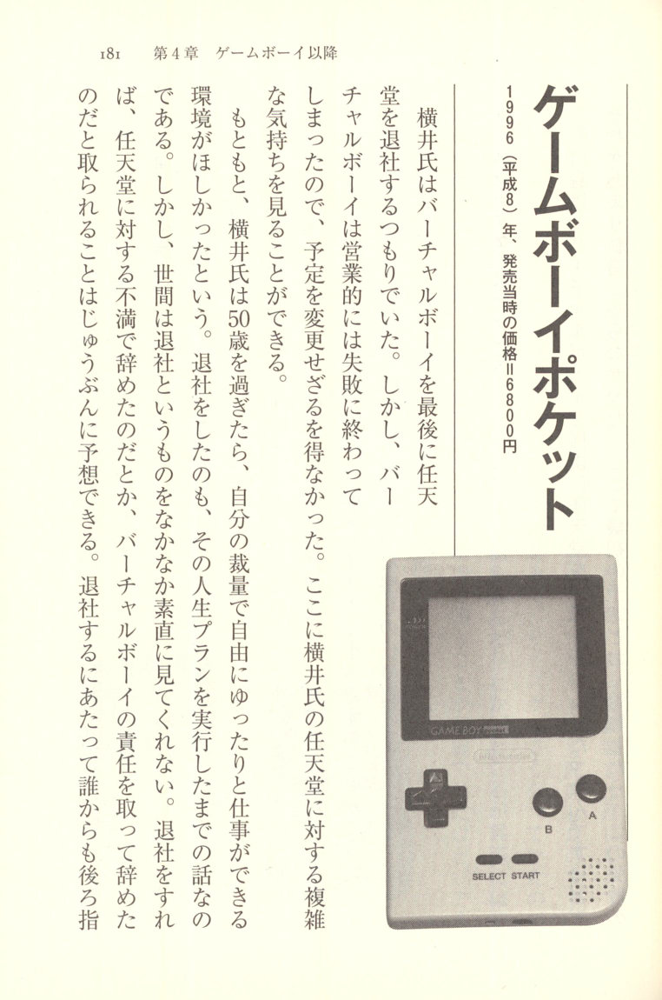
Game Boy Pocket Game Boy Pocket
1996 (Heisei 8) — Price at launch: ¥6,800
Yokoi intended to leave Nintendo after the Virtual Boy. However, since the Virtual Boy ended up being a commercial failure, he had no choice but to change his plans. Here we can see Yokoi's complicated feelings toward Nintendo.
Originally, Yokoi had wanted an environment where, once he passed the age of fifty, he could work freely and at a relaxed pace, guided by his own judgment. His departure from the company was simply the execution of that life plan, nothing more. However, the world does not readily take a resignation at face value. He could easily predict that if he left, people would assume he had quit out of dissatisfaction with Nintendo, or that he had resigned to take responsibility for the Virtual Boy's failure. When it came to leaving the company, being pointed at behind his back by people who didn't know the real story was something he wanted to avoid at all costs. He wanted a clean, amicable departure — one that was beyond reproach. That is how much Yokoi loved the company called Nintendo. "I truly feel that I was fortunate to have been able to join Nintendo. They took a chance on me when I had nowhere else to go and raised me to where I am today, so I can't help but feel a deep sense of gratitude." Yokoi postponed his departure and pressed forward with the development of one final parting gift: the Game Boy Pocket.
The Game Boy Pocket was a dedicated gaming device that made the Game Boy even more compact. The original Game Boy was sized to be carried around in a bag, but the Pocket was small enough to fit in a clothing pocket. It was, so to speak, the crowning achievement of the entire Game Boy series.
From Handy to Pocket
I myself had intended to leave Nintendo after the Virtual Boy, but it didn't really take off. If I had gone ahead and retired as originally planned, this failure's
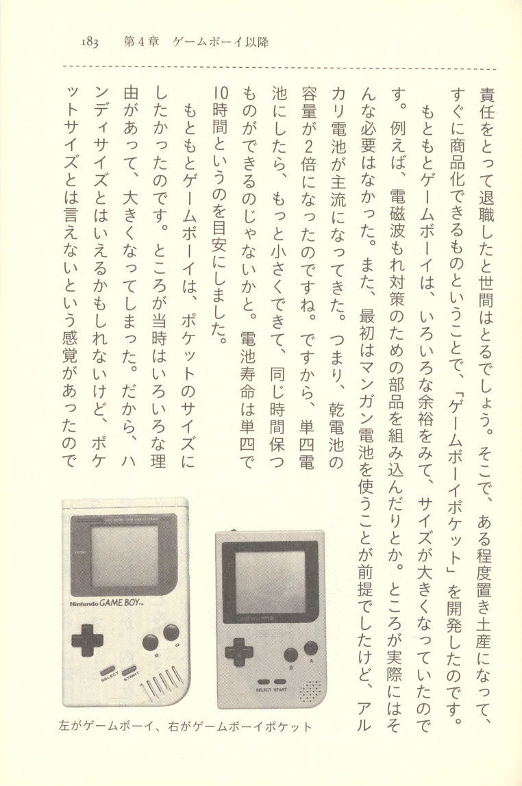
Game Boy and Game Boy Pocket side by side responsibility would have been pinned on me by the public. So, as something of a parting gift — something that could be commercialized relatively quickly — I developed the "Game Boy Pocket."The original Game Boy had been made larger than it needed to be, with all sorts of generous margins built in. For example, components were added to deal with electromagnetic wave leakage, and so on. But in practice, none of that turned out to be necessary. Also, the original assumption was that it would run on manganese batteries, but alkaline batteries became the mainstream. In other words, the capacity of dry cell batteries had doubled. So if we switched to AAA batteries, we could make it even smaller while maintaining the same battery life. That was the thinking. We set a target of ten hours of battery life on AAAs.
Originally, I had wanted to make the Game Boy pocket-sized. But at the time, for various reasons, it ended up being larger. So while you could perhaps call it "handy-sized," there was always a feeling that you couldn't really call it "pocket-sized."
Left: Game Boy; Right: Game Boy Pocket Also, an acquaintance of mine bought a cell phone. When I asked why, he said, "I didn't like it before because it was too big, but now it's gotten this small." So I thought, if we make the Game Boy smaller, wouldn't that attract new users? If it became small enough to fit in an inside pocket, even adults would start thinking they might take it along on trips. So we actually looked into the dimensions, and within three or four days we had our answer — it could be made pocket-sized. We felt confident that this would work.
The Game Boy Is "the Basics of Gaming"
The Game Boy, from the very beginning, has been what you might call a "quiet boom." It always maintained steady sales. But software houses naturally wanted to make software for the Super Famicom. The prices were higher on that side, so the profit margins were naturally better. So in my department, we steadily made software ourselves and built up a solid base of loyal support — that's the feeling I have.
The Game Boy is "the basics of gaming." TV games keep pushing further and further toward more colors and 3D, but when we released a game like Tetris on the Game Boy,
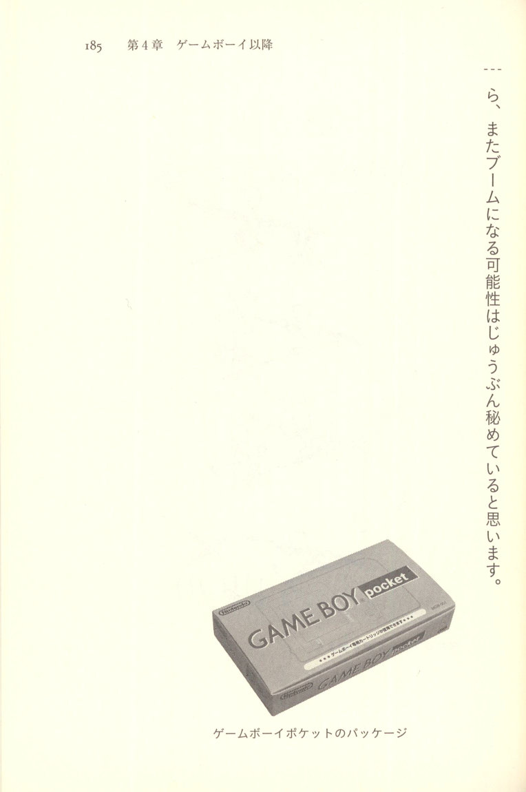
Game Boy Pocket retail packaging I believe it still holds more than enough potential to spark a boom all over again.
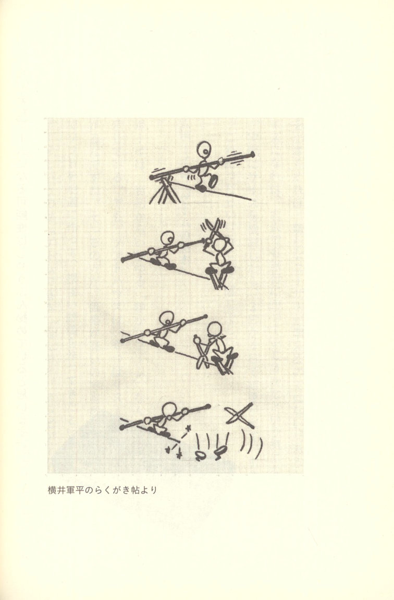
- Twisted nematic liquid crystal. Has a narrow viewing angle and poor color reproduction, but is widely used in portable devices due to its low cost, low power consumption, and other advantages. ↩
- Super-twisted nematic liquid crystal. ↩
- A portable game console with a color LCD screen, released in 1990 by Sega Enterprises (now Sega Games). ↩
- The mega-hit falling-block puzzle game series "Puyo Puyo." Released by Compile in 1991, Kazunari Yonemitsu, who was on staff at the time, handled the planning, direction, and screenplay. Compile went bankrupt, and the intellectual property rights to "Puyo Puyo" were sold to Sega, where they remain to this day. ↩
- "During the development of 'Puyo Puyo,' at the stage where the rules were mostly finalized and we were making various adjustments, 'Dr. Mario' was released. I was astonished. There were many similarities, and I remember discussing it with the programmers. However, we recognized that it was a different game, so we released ours with confidence." (Kazunari Yonemitsu, developer of "Puyo Puyo.") ↩
- A phenomenon in which insufficient processor performance causes parts of the processing to be skipped or delayed, resulting in the action freezing or slowing down. ↩
- A home gaming console released in 1996. It was the successor to the Super Famicom. It was Nintendo's first console to fully support 3D gaming, but as a latecomer it trailed behind the PlayStation, and ↩
- In computer graphics, through the combination of elements, objects such as characters are used to represent objects — referring to triangles, quadrilaterals, and the like. ↩
- Refers to the jagged, staircase-like stepping effect that appears along the outlines of shapes, typically seen when resolution is low. ↩
- "A law that allows victims to seek compensation from manufacturers and other parties when they can prove they suffered harm to life, body, or property due to a defect in a product" (from the Consumer Affairs Agency website). ↩